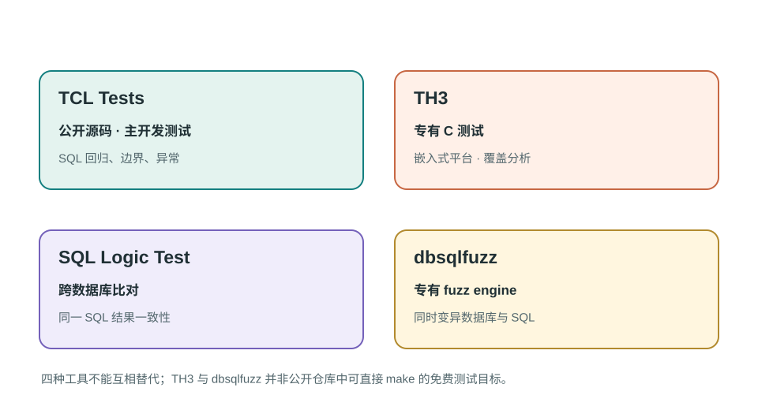
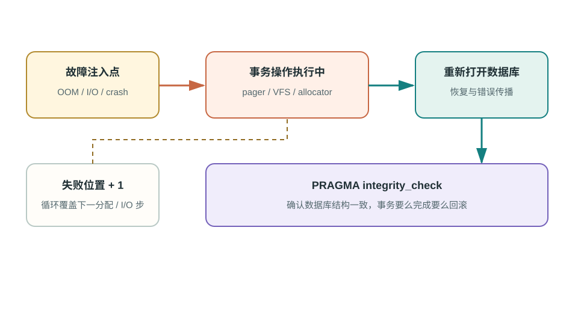
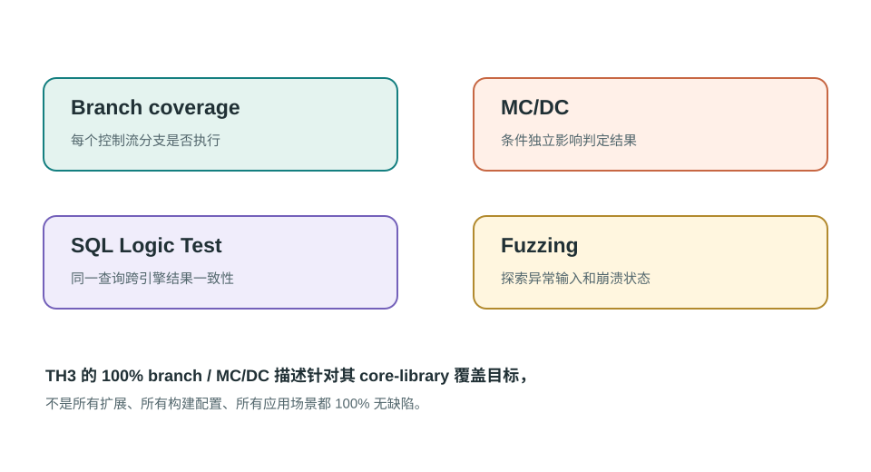

SQLite 测试体系：TCL、TH3、故障注入与 Fuzzing
SQLite 的可靠性不是由一套单元测试保证。TCL、TH3、SQL Logic Test 和 dbsqlfuzz 分别检查回归、覆盖、跨引擎语义和异常输入；OOM、VFS I/O 失败与崩溃模拟进一步检验数据库在故障中的行为。
阅读提示：可轻点图解打开独立矢量原图；窄屏图解支持横向查看细节。
1. 为什么一个 SELECT 正确还不足以证明数据库可靠？
数据库引擎必须在正常 SQL、坏 SQL、损坏文件、内存不足、磁盘 I/O 失败、进程崩溃和并发访问等环境中保持可预测行为。仅仅验证一条查询返回预期行，只覆盖了很小一部分风险。SQLite 官方测试文档将测试划分为独立 harness、anomaly testing、fuzz testing、regression testing、资源泄漏检测和动态分析等层次。

2. 四套测试框架：谁公开，谁专有，谁比较结果？
SQLite 官方列出四个独立测试 harness。第一套是 TCL Tests：与核心源码位于同一源码树，属于 public domain，也是开发过程中主要使用的测试。TCL 脚本由 testfixture 运行，测试辅助逻辑集中在 test/tester.tcl 等文件中。
第二套是 TH3：以 C 编写的专有测试套件，面向不方便运行 Tcl 或工作站工具的嵌入式平台。官方文档描述它对核心 SQLite library 达到 100% branch 与 MC/DC 覆盖；这不是说所有扩展、所有编译配置或所有应用组合都已被穷尽。TH3 并不是公开 GitHub 仓库中可以直接执行 make th3 获得的免费测试目录。
第三套 SQL Logic Test（SLT）把大量 SQL 语句运行在 SQLite 与其它数据库引擎上，检查相同 SQL 的结果是否一致。第四套 dbsqlfuzz 是专有 fuzz engine，会同时变异数据库文件和 SQL 输入，从而探索单独修改 SQL 或单独修改数据库难以触达的异常状态。四者的目标和可获得性不同。
3. TCL 测试如何把 SQL 语句变成可回归断言？
TCL harness 的关键价值是：测试脚本不只是“执行一段 SQL”，而是把执行结果、错误码、查询计划或状态计数变成可比较的断言。test/tester.tcl 提供 do_execsql_test、do_catchsql_test、do_test 等帮助函数。比如：
do_execsql_test expridx-1.1 {
CREATE TABLE t(x,y);
INSERT INTO t VALUES(1,2), (3,4);
SELECT x+y FROM t ORDER BY x;
} {3 7}
do_catchsql_test expridx-1.2 {
SELECT * FROM missing_table;
} {1 {no such table: missing_table}}上面展示的是 TCL harness 的写法示意；真实回归文件位于 SQLite 源码树的 test/*.test，并由 testfixture 及 tester.tcl 执行。源码定位：do_execsql_test 的定义。测试文件名和编号帮助把失败定位到稳定的回归案例，而不是把人工观察终端输出当成验收。
在 SQLite 源码树中，make testfixture 构建 TCL 测试执行器；./testfixture test/expridx1.test 可运行单个测试文件。make test 对应更完整的开发测试目标，make fulltest 则运行 release-test 目标，依赖的工具链与构建配置应按 main.mk 核实。
4. 故障注入：把 OOM、I/O 错误和掉电变成可重复事件
异常测试不是简单地把 malloc() 返回 NULL 一次。SQLite 的 TCL 与 TH3 测试可以替换分配器，让它在第 N 次分配时失败，再逐步增加 N，直到操作成功；测试既覆盖“只失败一次”，也覆盖“第一次失败后持续失败”。这能发现错误路径上的资源泄漏、错误码传播和部分状态清理问题。

I/O 错误通过专门的 VFS shim 注入，让某次读写或同步调用返回错误。崩溃测试则由独立子进程执行数据库更新，在写入中途随机终止，再用 VFS 模拟未同步写入的重排状态。父进程重新打开数据库，检查事务是完整提交还是完全回滚，并运行 PRAGMA integrity_check。
因此，文章中若出现“SQLite 已通过断电测试”，应明确是通过 VFS 和进程模拟验证原子提交语义，而不是对真实硬件进行无数次物理断电。官方 Crash Testing 对这一测试模型有具体说明。
5. Fuzzing 与 fuzzcheck：生成输入和回放输入不是一回事
Fuzzing 的目标是探索输入空间，寻找崩溃、断言失败、内存错误或异常状态。SQLite 官方提到多种 SQL fuzzers、OSS-Fuzz、dbsqlfuzz 和其它工具。dbsqlfuzz 的输入同时包含数据库文件与 SQL，因此可以把数据库结构和查询组合起来变异。
源码树中的 test/fuzzcheck.c 则是一个回归回放工具：它读取包含数据库镜像和 SQL 文本的 corpus，再对每个输入执行操作，主要寻找 crash、assertion fault 或 memory leak；它的源代码明确说明不尝试验证 SQL 输出是否正确。所以 fuzzcheck 不是 dbsqlfuzz 的替代品，也不是一个通用 SQL 结果比较器。
如果要把 fuzz 输入纳入产品回归，应保留最小复现样本、记录 SQLite source id、区分 crash regression 与语义结果断言，并在升级后持续回放。
6. 覆盖率不是质量的唯一数字
Branch coverage 检查控制流的两个或多个分支是否走过；MC/DC 检查复合条件中的每个条件是否能独立改变整体判定；SQL Logic Test 检查跨引擎结果一致；fuzzing 则探索随机或定向变异输入。它们回答不同问题，不能用一个 100% 数字替代其它测试类型。

官方测试页面中的 100% branch / MC/DC 说法针对 TH3 对核心 SQLite library 的覆盖目标。该数字不能移植为“所有扩展、所有平台和全部编译选项也都 100% 覆盖”，更不能理解为不存在 bug。对仓库读者而言，最实用的策略是：每个功能建立结果断言，每个错误路径建立错误码断言，对文件/事务行为增加异常路径，再用 fuzz corpus 补充输入多样性。
examples/24_test_contracts.py 是一个可在普通 Python 环境运行的轻量契约测试示例，覆盖外键、唯一约束与事务回滚；它不冒充 SQLite 官方 TCL、TH3 或 fuzz harness。
自测：为什么 fuzzcheck 的退出码成功不等于 SQL 结果正确？
因为 fuzzcheck 的主要目标是检测崩溃、断言错误或泄漏；其源文件明确说明不会验证输出。要检查结果语义，仍需使用明确的 expected result、SQL Logic Test 或应用层断言。
官方资料与版本边界
涉及源码内部符号时，以 SQLite 3.54.1 源码快照为定位基准；公开文档用于解释稳定接口和语义。内部函数、行号和构建配置会随版本变化。
- How SQLite Is Tested · SQLite 官方文档或版本化源码
- SQLite test harness source · SQLite 官方文档或版本化源码
- TCL test helper · SQLite 官方文档或版本化源码
- fuzzcheck source · SQLite 官方文档或版本化源码
- SQLite build test targets · SQLite 官方文档或版本化源码